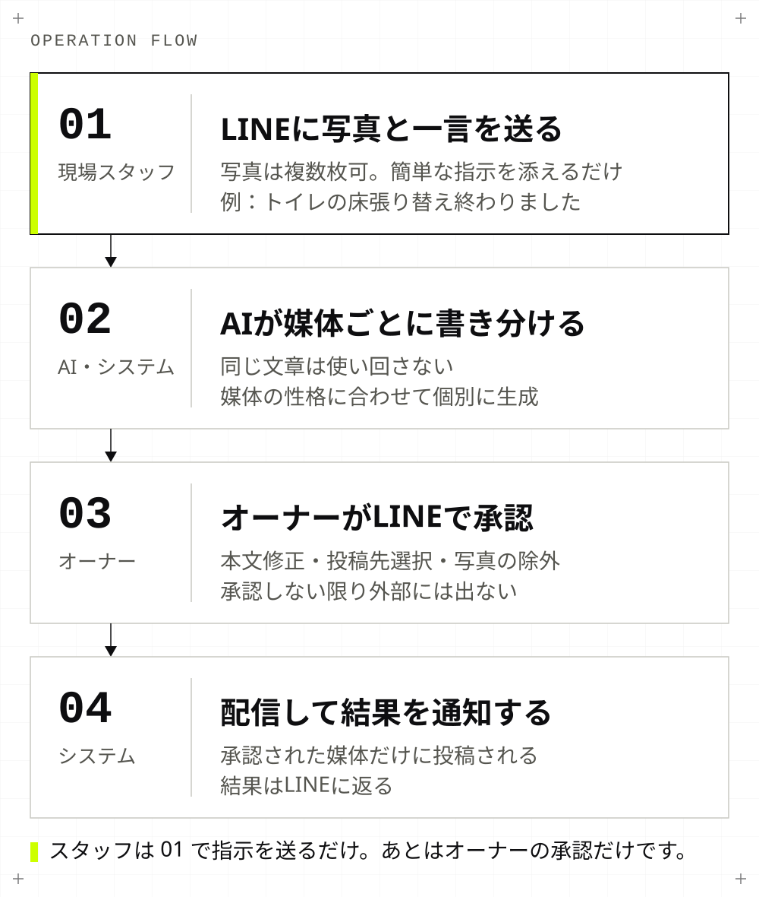
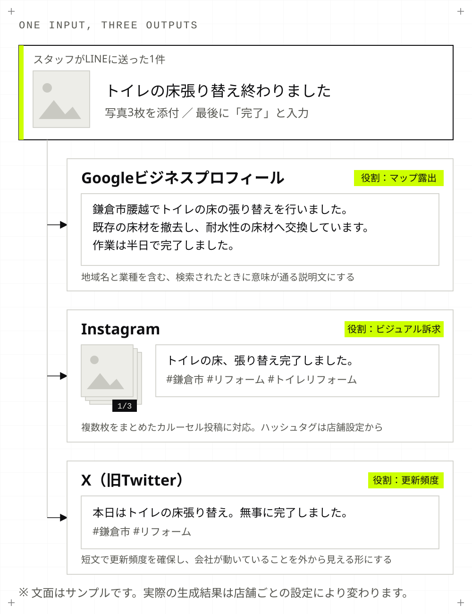
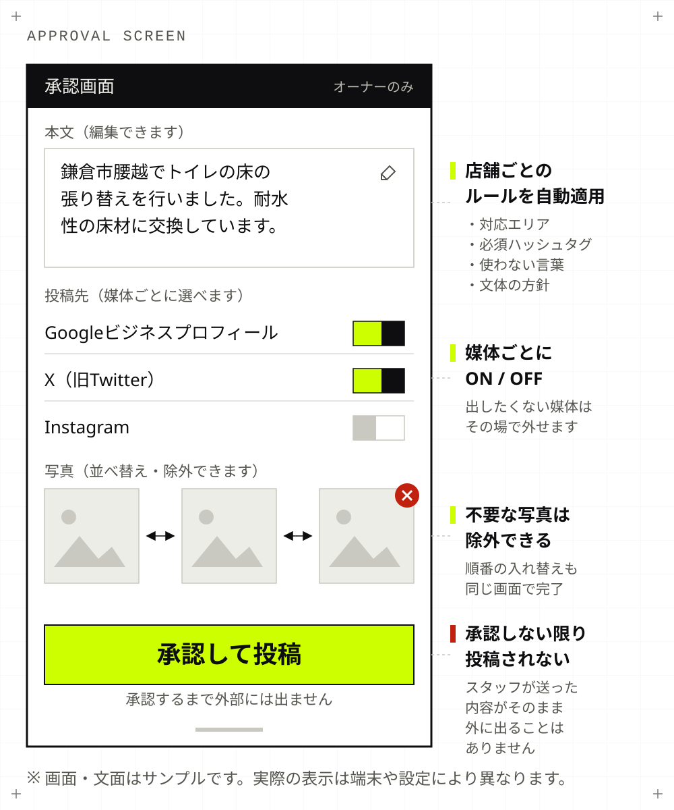
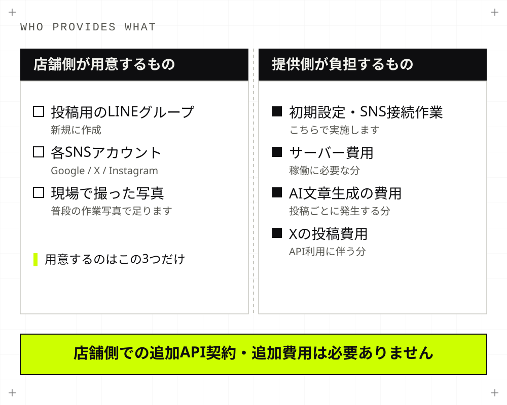

System Development
SNS自動投稿システム開発
現場のスタッフがいつも使っているLINEに、写真と一言コメントを送るだけ。AIが媒体ごとに文章を書き分け、オーナーがスマホでワンタップ承認すると、Googleビジネスプロフィール・X・Instagramへ投稿されます。新しいアプリを覚える必要はありません。自社で本番稼働させながら開発しています。
なぜ投稿が続かないのか
地域の店舗にとってGoogleマップとSNSは集客に直結しますが、止まる理由はやる気ではなく、手順の多さにあります。
- 施工写真は撮っているが、投稿されないまま溜まっていく
- 媒体ごとに文章を書き分けるのが手間で、続かない
- 「SNS担当」が辞めると、そのまま更新が止まる
- 何を書けばいいか分からず、投稿の質にばらつきが出る
この仕組みが目指すのは「投稿を増やすこと」ではなく、何もしていないのに投稿が続いている状態をつくることです。
現場の流れ
スタッフがすることは、LINEに写真を送って簡単な指示や修正を伝えるだけです。技術的な作業は発生しません。
- 1. スタッフが写真を送る：専用のLINEグループに写真（複数枚可）を送り、何をしたかを一言添える（例：「トイレの床張り替え終わりました」＋写真3枚）
- 2. AIが媒体ごとに文章を生成：同じ文章を使い回さず、媒体の性格に合わせて個別に書き分ける
- 3. オーナーがLINEで承認：承認用リンクがオーナーの個人LINEに届く。文章の修正、投稿先の選択、写真の並び替えと除外がその場でできる
- 4. 配信と結果通知：選んだ媒体へ投稿され、結果がLINEに返る

3つの媒体と、それぞれの狙い

| 媒体 | 主な役割 | 狙い |
|---|---|---|
| Googleビジネスプロフィール | マップ・検索での露出（MEO） | 「地域名＋業種」で探している人への接触。集客に最も直結する |
| 施工事例のビジュアル訴求 | 複数枚をまとめたカルーセル投稿に対応 | |
| X（旧Twitter） | 短文での更新頻度の確保 | 会社が動いていることが外から見える状態をつくる |
設計上こだわった点
- アプリを増やさない：現場が使うのは既存のLINEのみ。導入教育が要らないため、初日から運用が回る
- 誤投稿を構造的に防ぐ：投稿は必ずオーナー承認を経る。スタッフが送った内容がそのまま外に出ることはない
- 店舗ごとのブランドルール：対応エリア、自社の強み、必ず入れるハッシュタグ、使ってはいけない言葉（「最安値」など）、文体の方針を店舗単位で設定し、誰が送っても会社のトーンが崩れないようにする
- 写真は投稿後に自動削除：配信が終わった写真はサーバーから消す。投稿自体は各SNS上に残るため見返せる

導入に必要なもの
- 投稿用のLINEグループ（新規作成）
- 各SNSアカウント（Googleビジネスプロフィール・X・Instagram）
- 初期設定と各SNSとの接続作業（こちらで実施します）
サーバー費用、AIの文章生成費用、Xの投稿費用は提供側が負担する構造で設計しています。店舗側が個別にAPI契約を結んだり、追加費用を払ったりする必要はありません。

投稿が続く状態をつくる仕組みであり、集客数や売上を保証するものではありません。
「うちの業種でも回るのか」「今の運用のどこを自動化できるのか」という段階のご相談で構いません。現在の投稿頻度と写真の撮られ方を伺ったうえで、向き不向きを率直にお伝えします。
システム開発を相談する